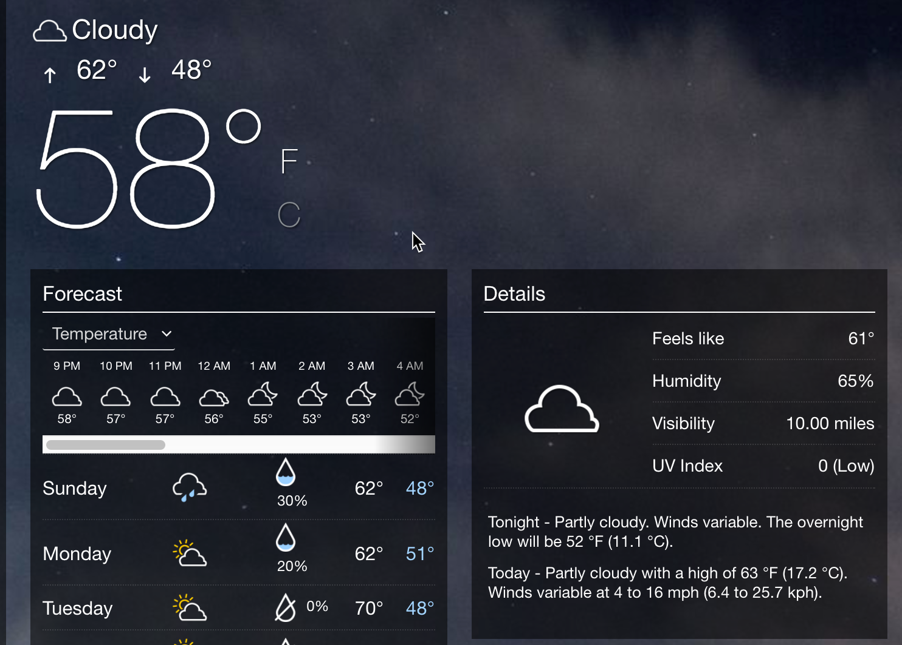

	<body>
    <div class="reveal innovation">
       <!-- Any section element inside of this container is displayed as a slide -->
       <div class="slides">
          <section>
             <h1>{{page.slide_title}}</h1>
             <p>
                <small>By Tom Johnson / <a href="http://twitter.com/tomjohnson">@tomjohnson</a><br/>
                <a href="http://idratherbewriting.com">idratherbewriting.com</a></small><br/><br/>
                <p><small>Slides available at <br/><a href="http://idratherbewriting.com/learnapidoc/slides/using_api_like_developer">idratherbewriting.com/learnapidoc/slides/using_api_like_developer/</a></small></p>
             </p>
          </section>

          <section>
             <h2>Using an API like a developer</h2>
           </section>
             <section>
                <h2>Retrieve weather info</h2>
                <div class="imageFit"><a href="http://idratherbewriting.com/learnapidoc/docapis_scenario_for_using_weather_api.html"></a></div>
                <p>See also <a href="https://weather.yahoo.com/united-states/california/santa-clara-2488836/">yahoo weather</a></p>
             </section>
             <section>
                <h2>Simple implementation</h2>
                <a href="../images/wind-openweathermap.html"></a>
             </section>
             <section>
               <h2>Fancy implementation</h2>
               <a href="https://weather.yahoo.com/united-states/california/santa-clara-2488836/"></a>
             </section>
             <section>
              <h2>Choosing a weather API</h2>
              <a href="https://openweathermap.org/"></a>
            </section>
            <section>
              <h2>Activity 1: Explore the OpenWeatherMap API</h2>

            </section>
            <section>
              <h2>Activity 2: Get OpenWeatherMap authorization keys</h2>
            </section>
             <section>
                <h2>Submitting requests</h2>
                
                <div style="clear: both"></div>
<div class="postman-run-button"
data-postman-action="collection/import"
data-postman-var-1="abd0d0741e8206266958"></div>
<script type="text/javascript">
  (function (p,o,s,t,m,a,n) {
    !p[s] && (p[s] = function () { (p[t] || (p[t] = [])).push(arguments); });
    !o.getElementById(s+t) && o.getElementsByTagName("head")[0].appendChild((
      (n = o.createElement("script")),
      (n.id = s+t), (n.async = 1), (n.src = m), n
    ));
  }(window, document, "_pm", "PostmanRunObject", "https://run.pstmn.io/button.js"));
</script>
             </section>
             <section>
               <h2>Activity 3: Make requests with Postman
             </section>

             <section>
                <h2>curl</h2>
                <pre><code data-trim contenteditable>
curl -X GET "https://api.openweathermap.org/data/2.5/weather?zip=95050&appid=fd4698c940c6d1da602a70ac34f0b147&units=imperial"

  </code></pre>
</section>
             <section>
                <h2>cURL commands</h2>
                <table>
                   <thead>
                      <tr>
                         <th>Command</th>
                         <th>Description</th>
                      </tr>
                   </thead>
                   <tbody>
                      <tr>
                       <td><code>-i</code> or <code>--include</code></td>
                         <td>Include response headers</td>
                      </tr>
                      <tr>
                        <td><code>-d</code> or <code>--data</code></td>
                         <td>Include data to post </td>
                      </tr>
                      <tr>
                        <td><code>-H</code> or <code>--header</code></td>
                         <td>Submit header</td>
                      </tr>
                      <tr>
                       <td><code>-X POST</code></td>
                         <td>The HTTP method to use </td>
                      </tr>
                      <tr>
                       <td><code>@filename</code></td>
                         <td>Load content from a file</td>
                      </tr>
                   </tbody>
                </table>
             </section>

             <section>
                <h2>Analyze responses</h2>
                <p style="text-align: left; margin-left: 50px;"><b>JSON objects</b>:</p>
                <pre><code data-trim contenteditable>
    {
    "key1":"value1",
    "key2":"value2"
    }
    </code></pre>
<p style="text-align: left; margin-left: 50px;"><b>JSON arrays</b>:</p>
                  <pre><code data-trim contenteditable>
    ["first", "second", "third"]
    </code></pre>
             </section>
             <section>
               <h2>Activity 4: Make requests with curl</h2>
             </section>
             <section>
                <h2>Log the response to the console</h2>
                <a href="/learnapidoc/assets/files/weatherdata-plain.html"></a> </section>
             <section>
                <h2>Use dot notation to access values</h2>
                <p style="text-align: left; margin-left: 50px;"><b>Temperature</b>:</p>
                <pre><code data-trim contenteditable>
                response.main.temp
                </code></pre>
                <p style="text-align: left; margin-left: 50px;"><b>Wind speed</b>:</p>
                <pre><code data-trim contenteditable>
    response.wind.speed
    </code></pre>
    <p style="text-align: left; margin-left: 50px;"><b>Wind direction</b>:</p>
    <pre><code data-trim contenteditable>
response.wind.deg
</code></pre>

             </section>

             <section>
               <h2>Result</h2>
               <a href="/learnapidoc/assets/files/wind-openweathermap.html"></a>

             </section>
             <section>
               <h2>Activity 5: Make AJAX request and inspect payload</h2>
             </section>
          </section>

    <section>
      <h2>Questions?</h2>
      
      </section>
       <!-- <section>
             <h1>The end</h1>
             <div>
                <div style="float:left; padding: 10px;">
                   
                </div>
                <div style="float:left; padding: 10px; text-align: left;">
                   <p><span class="myname">Tom Johnson</span><br/>
                      &mdash; <a href="http://idratherbewriting.com">idratherbewriting.com</a><br/>
                      &mdash;  <a href="http://twitter.com/tomjohnson">@tomjohnson</a><br />
                      &mdash; <a href="mailto:tomjoht@gmail.com">tomjoht@gmail.com</a>
                   </p>
                </div> -->

		<script src="lib/js/head.min.js"></script>
		<script src="js/reveal.js"></script>

		<script>
			// More info about config & dependencies:
			// - https://github.com/hakimel/reveal.js#configuration
			// - https://github.com/hakimel/reveal.js#dependencies
			Reveal.initialize({
        history: true,
        center: false,
        progress: true,
        slideNumber: true,
				dependencies: [
					{ src: 'plugin/markdown/marked.js' },
					{ src: 'plugin/markdown/markdown.js' },
					{ src: 'plugin/notes/notes.js', async: true },
					{ src: 'plugin/highlight/highlight.js', async: true, callback: function() { hljs.initHighlightingOnLoad(); } }
				]
			});
		</script>
	</body>
</html>
